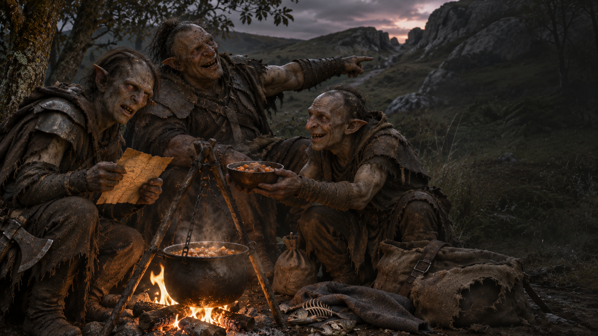

Chapitre V · Une pause risquée
Le Feu dans la vallée
Un repas chaud. Une compagnie douteuse.
Approcher du campementUne odeur de ragoût
Deux Orcs surveillent une marmite cabossée. Vous leur montrez votre ordre de mission. Le plus grand désigne les collines.
« Ta bestiole nous a volé trois poissons. Elle se cache dans la grotte au-dessus du ruisseau. Si tu la trouves, récupère notre dîner. »
Son compagnon vous propose une écuelle. Sur son sac, vous remarquez un insigne arraché : ces deux-là ont déserté. Ils vous proposent de partir avec eux vers l’ouest dès le lendemain.
Le ragoût sent bon. Mais si une patrouille vous trouve ici, votre capitaine risque de très mal prendre cette pause.